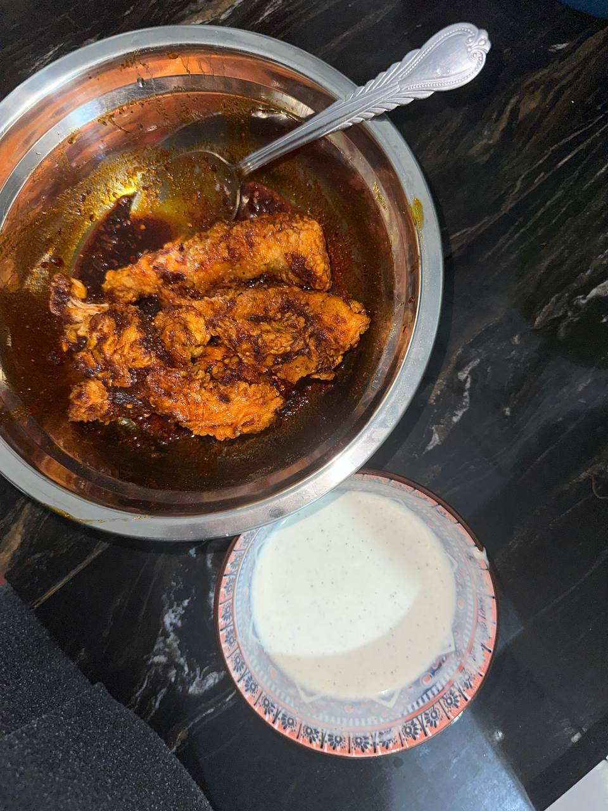

My Food Diary üç∞

üçµ I love matcha ‚Äî always calming and cute.
üç∞ Tiramisu is forever my favourite dessert.
üç¶ Matcha ice cream? YES, always yes.

üçó Homemade chicken tenders, Khairulaming style.
üçù Pasta & dessert time with my girls!
ü•∞ My eating buddy, Nureen! No meal without her.
üçù Korean Food!
Homemade Beefff Grill!
Last Berbuka In Terengganu (i miss mak's cooking)

NASI KANDARRRR!!!! my favourite
i made this by myself hihi proud :D
went to Ipoh Night Market with my cousiess
Nasi Kandar again!!! In Penang with my zaim
Nasi Kandar lagi?? tapi ni dengan member.. In Penang jugakk
Pergi Dusun Riffa, My Rate 100/10